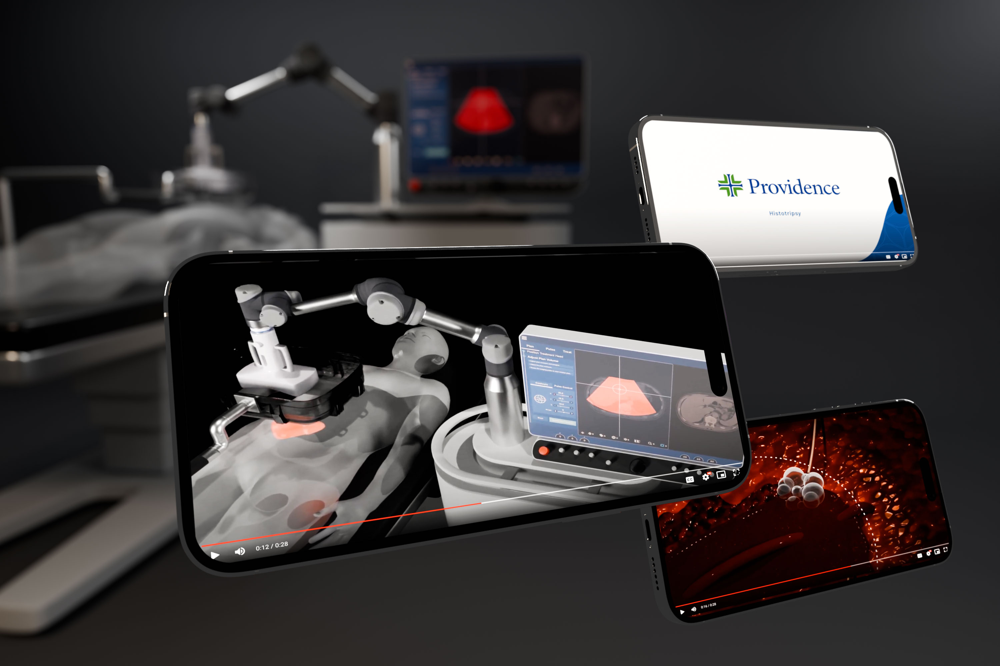

Providence · Advanced Cancer Care
Making breakthrough medical innovation feel clear, human, and credible.
To support the launch of a groundbreaking non-invasive cancer treatment—the first of its kind in California—I created a high-impact motion piece designed to educate, inspire confidence, and reinforce Providence’s leadership in advanced care.

The Challenge
Explain something technically complex without making it feel clinical or intimidating.
The challenge wasn’t simply explaining the technology. Histotripsy is a sophisticated medical innovation, and the creative needed to communicate what made the treatment remarkable while remaining understandable to a broad audience.
The story had to balance scientific credibility with emotional clarity—giving patients and families enough context to understand the treatment while reinforcing the trust, expertise, and humanity associated with Providence.
Creative Approach
Build the explanation visually first.
I led the project end-to-end, developing the concept, visual language, 3D treatment imagery, and motion system. Rather than relying on dense technical explanation, the campaign used simplified spatial storytelling, selective color, controlled pacing, and cinematic framing to guide the viewer through the technology.
The result was designed to feel advanced without becoming abstract—and sophisticated without losing accessibility.
3D + Motion System
A visual language built around precision, focus, and treatment without incision.
The 3D system gave the campaign a visual vocabulary for something patients could not otherwise see. By reducing surrounding information and directing attention to the treatment area, the animation made the process easier to understand while retaining a premium healthcare aesthetic.


Outcome
A cornerstone campaign asset that helped position Providence at the forefront of innovative cancer care.
Delivered on an aggressive production timeline, the final video became a central digital campaign asset across Providence channels, earning millions of views. More importantly, it translated a complex new treatment into a story audiences could quickly understand—supporting awareness of the technology while strengthening Providence’s position as a leader in advanced, patient-centered care.